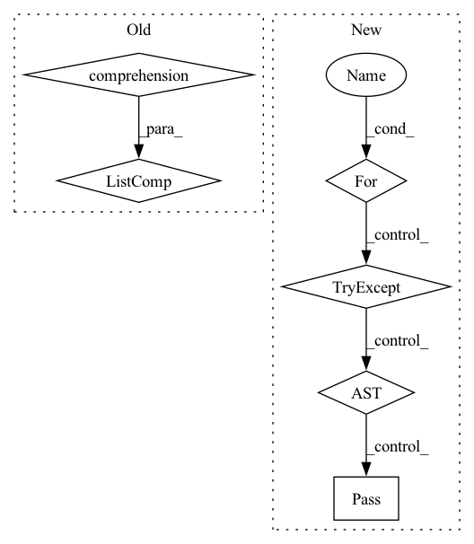

Pattern ID :8593
Before Change
first = self.get_data(name=name, is_text=False)
name = "author"
authors = first.find_all(name=name)
self.Authors = ", ".join([elt.find(name="forename").text + " " + elt.find(name="surname").text for elt in authors] )
def get_year(self):
name = "date"After Change
name = "author"
authors = first.find_all(name=name)
result = []
for elt in authors:
try:
fname = elt.find(name="forename").text
lname = elt.find(name="surname").text
result.append(fname + " " + lname)
except :
pass
if result:
self.Authors = ", ".join(result)
else:
self.Authors = ""In pattern: SUPERPATTERN
Frequency: 3
Non-data size: 6
Instances Fragment ID: 29780014
Project Name: yassinekdi/naimai
Commit Name: 82bd0aa6d11b2e07bc41fac417ae81307ad0f8e3
Time: 2022-07-21
Author: keptsa@yahoo.fr
File Name: papers/full_text/pdf_paper_grobid.py
M Class Name: paper_grobid
N Class Name: paper_grobid
M Method Name: get_Authors(1)
N Method Name: get_Authors(1)
M Parent Class: paper_full_base
N Parent Class: paper_full_base
M File Name: papers/full_text/pdf_paper_grobid.py
N File Name: papers/full_text/pdf_paper_grobid.py
M Start Line: 70
M End Line: 71
N Start Line: 87
N End Line: 101
Before Change
if self.miner:
hard_pairs = self.miner(emb, labels)
only_negative_labels_indicis = [unique_labels.index(l) for l in self.only_negative_labels]
valid_indicies = [int(i) for i in hard_pairs[0] if labels_int[int(i)] not in only_negative_labels_indicis]
hard_pairs = (hard_pairs[0][valid_indicies], hard_pairs[1][valid_indicies], hard_pairs[2][valid_indicies])
After Change
hard_pairs = self.miner(emb, labels)
only_negative_labels_indicis = []
for l in self.only_negative_labels:
try:
uniq_index = unique_labels.index(l)
only_negative_labels_indicis.append(uniq_index)
except ValueError:
pass
valid_indicies = [int(i) for i in hard_pairs[0] if labels_int[int(i)] not in only_negative_labels_indicis]
hard_pairs = (hard_pairs[0][valid_indicies], hard_pairs[1][valid_indicies], hard_pairs[2][valid_indicies])
Fragment ID: 29780015
Project Name: mpi-dortmund/tomotwin-cryoet
Commit Name: 0c4f29f49e0fcb94651e1e5391baec4e2d2c38b4
Time: 2022-09-16
Author: thorsten.wagner@mpi-dortmund.mpg.de
File Name: tomotwin/modules/training/LossPyML.py
M Class Name: LossPyML
N Class Name: LossPyML
M Method Name: forward(4)
N Method Name: forward(4)
M Parent Class: nn.Module
N Parent Class: nn.Module
M File Name: tomotwin/modules/training/LossPyML.py
N File Name: tomotwin/modules/training/LossPyML.py
M Start Line: 426
M End Line: 426
N Start Line: 426
N End Line: 435
Before Change
def get_dois(self,idx_start,idx_finish):
journals = Journals()
works = journals.works(self.issn)
self.docs["doi"] = [elt["DOI"] for elt in works.select("DOI")] [idx_start:idx_finish]
print("Len dois : ", len(self.docs["doi"]))
def get_authors(self, authors_list):After Change
def get_dois(self,idx_start,idx_finish):
journals = Journals()
works = journals.works(self.issn)
for elt in works.select("DOI"):
try:
self.docs["doi"].append(elt["DOI"])
except :
pass
self.docs["doi"] = self.docs["doi"][idx_start:idx_finish]
print("Len dois : ", len(self.docs["doi"]))
def get_authors(self, authors_list): Fragment ID: 29780013
Project Name: yassinekdi/naimai
Commit Name: ce86aff6e3180b0e0b47ace93d07820936ae8953
Time: 2022-02-16
Author: keptsa@yahoo.fr
File Name: crawlers/issn_crawler.py
M Class Name: ISSN_crawler
N Class Name: ISSN_crawler
M Method Name: get_dois(3)
N Method Name: get_dois(3)
M Parent Class:
N Parent Class:
M File Name: crawlers/issn_crawler.py
N File Name: crawlers/issn_crawler.py
M Start Line: 18
M End Line: 18
N Start Line: 18
N End Line: 23